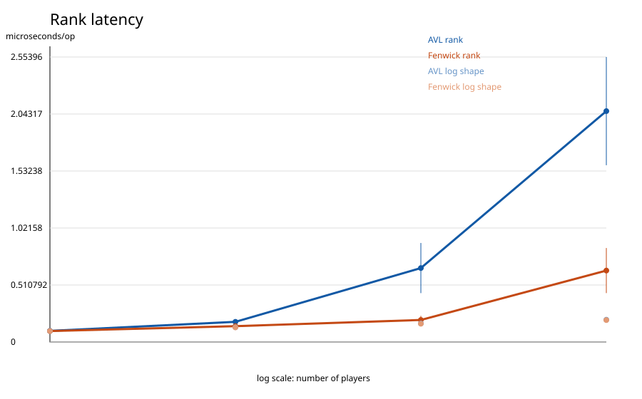
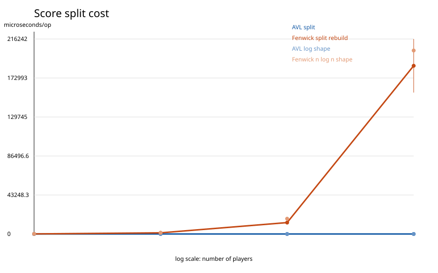

Project 2 · Team Big_O(6)
CS 253 / MA 253
Source: Project 2 description, repository implementation, and measured results in results/raw/full.csv.
The service answers a player's rank and lists exact positions such as 40–50 while scores are revised.
At season rollover it splits by score threshold and merges regional leagues.
| Scores in order | 90 | 80 | 80 | 70 |
|---|---|---|---|---|
| Competition rank | 1 | 2 | 2 | 4 |
Player ID breaks ties for position order. Rank counts only strictly higher scores.
Stores complete (score, player ID) entries, subtree sizes, and heights. It supplies exact positions and structural split/join.
Stores counts over known score coordinates. It supplies rank and selected score through prefix sums and binary lifting.
Maps each ID to its current score so a revision can remove the old entry from both structures.
The application audit checks matching player counts and entries across all three structures.
Join descends the taller boundary spine until the pivot fits, then repairs balance and subtree sizes.
Split follows one search path. Each path node joins its untouched subtree with one assembled side.
Σ join costs ≤ 4H per side, H = O(log n)
The height differences telescope. The public join also checks boundary ordering; arbitrary league merges insert players individually.
Proofs: D1 and D5 in docs/derivations/. Code: Avl::join_nodes and Avl::split_node.
| Check | Scale and result |
|---|---|
| Sorted-array differential test | 1,000,000 operations, seed 253: pass |
| Adversarial AVL audit | 10,000 nodes: pass |
| Live application replay | 1,000,000 players and revisions: pass |
| Season operation | 499,336 / 500,664 split, merged back to 1,000,000 |
The oracle uses a bounded ID pool of 1,000; the separate replay tests the million-player scale.

At 1,000,000 players: AVL 2.069 µs, Fenwick 0.640 µs per rank. Five trials per point; dashed curves show model shapes anchored at n=1,000. Raw data: results/raw/full.csv.

At 1,000,000 players: isolated AVL split 2.564 µs, two Fenwick rebuilds 186,554 µs. Application split also rebuilds hash and Fenwick state. Raw data: results/raw/full.csv.
At one million players, AVL selected a player entry in 2.329 µs. Fenwick selected a score in 1.070 µs.
Ordered AVL join averaged 0.200 µs. Rebuilding combined Fenwick counts averaged 164,618 µs.
The operations have different outputs and preconditions. These timings describe isolated structure work, not complete application requests.
Five-trial means from results/raw/full.csv; machine and spread are documented in REPORT.md.
bash scripts/build.sh bash tests/run_tests.sh bash scripts/run_all.sh
The test command checks one million differential operations. The full run replays one million players and revisions, then regenerates the raw benchmark CSV and four figures.
README.md gives the original PowerShell CSV query workflow and the current evaluation interface.